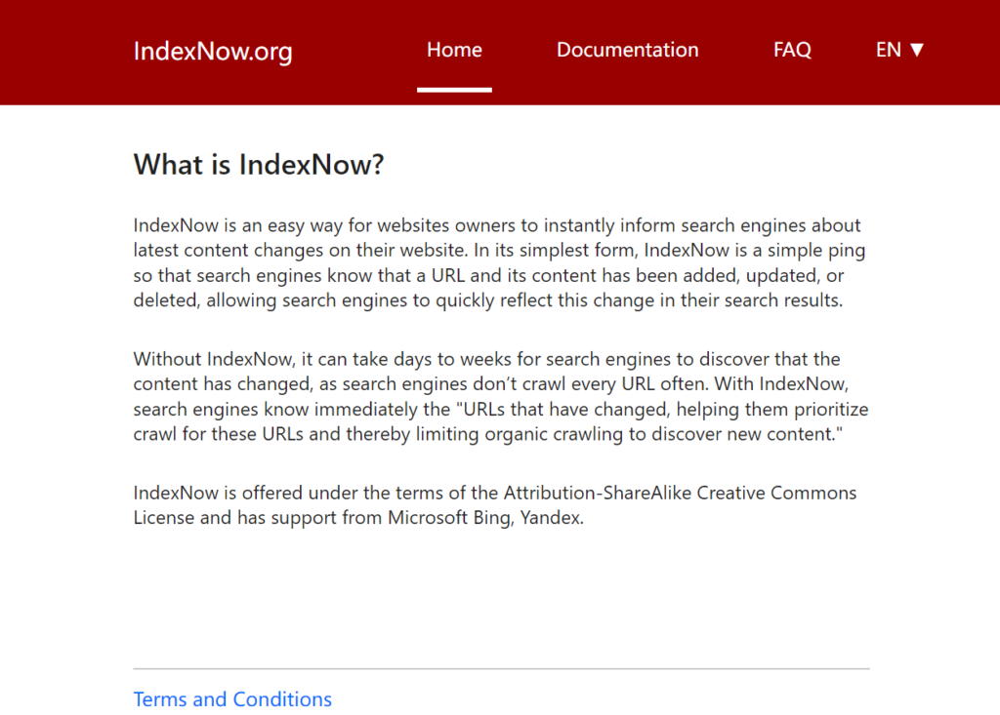
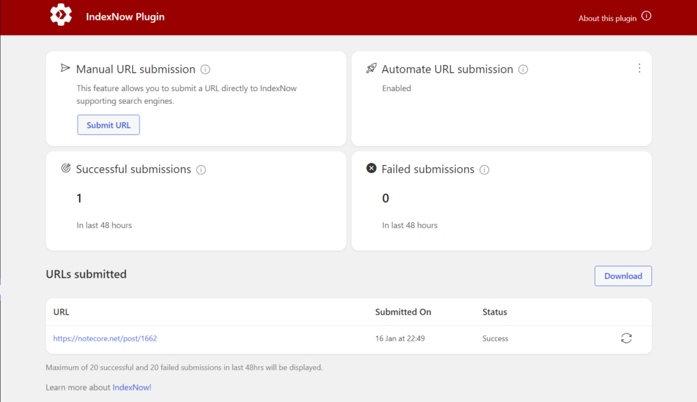

IndexNow提交网页到Bing litenote 一月 16, 2022 Updated on 四月 16, 2022 IndexNow是一个简单高效的WordPress插件，可以直接提交你的文章到微软Bing和Yandex。 现在搜索已经不是大众需求，但是好的搜索依然是十分重要的。微软Bing已经是我认为最有使用价值的搜索引擎，也是我日常使用必不可少的搜索工具。因此，在目前的环境下，使用IndexNow这款小插件，还是有意义的。 看看官网的介绍：  其实，操作非常简单，本身这款插件就会自动提新发布的文章。如果你要手动提交，把网址添加进去就可以了，提交成功会有提示，如果提交失败，可以重试。 